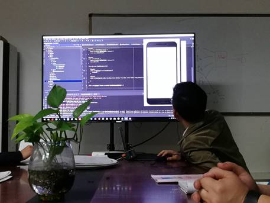
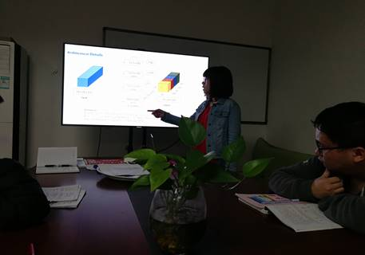

又一次精彩的例会
转眼开学就要一个月了，实验室于3月25日晚七点召开了三月的最后一次例会。此次参加例会的有刘欢、李光伟、闫博文、蒙小龙、蔡文杰、罗国婷、冯姣、唐怡、张弛名、骆蓉和罗斐等11名研究生同学和黄俊老师。在这里特别感谢黄俊老师撑着感冒头疼的身体还来组织这场例会。
会议分为两部分进行，第一部分是同学们各自总结本周的学习进度及心得体会。第二部分式论文分享报告，此次进行论文分享报告的式闫博文同学和罗国婷同学。
闫博文同学给大家简要的介绍了安卓进程间的通信机制（IPC for Android）。跨进程通信方式有使用Bundle、使用文件共享、使用Message、AIDL、使用ContentProvider和使用Socket等6种方式。很好的给大家科普了一下这方面的知识。

闫博文同学讲解安卓进程间的通信机制
罗国婷同学给大家分享了一篇名为“Going Deeper with Convolutions”的文献，文献讲述了一个叫Inception的网络，通过稀疏矩阵乘法提高网络内部计算资源的利用率。该网络最大的特点是控制了计算量和参数量的同时,获得了非常好的分类性能一top-5错误率6.67%，只有AlexNet的一半不到。Inception V1有22层深，比AlexNet的8层或者VGGNet的19层还要更深。但其计算量只有15亿次浮点运算,同时只有500万的参数量,仅为AlexNet参数量(6000 万) 的1/12,却可以达到远胜于AlexNet 的准确率，可以说是非常优秀并且非常实用的模型。

罗国婷同学讲解Inception网络
好了，此次例会的大致内容就是这样，让我们继续努力，取得更加傲人的成绩吧！